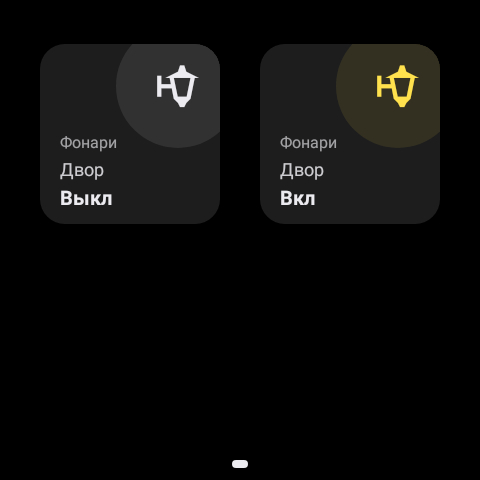

Тип light (Свет)
Блок light управляет освещением и имеет четыре подтипа. При кратковременном нажатии на блок происходит отправка команды вкл/выкл, при длительном удержани происходит переход на страницу настроек блока (кроме типа light_variant_OnOff). Общие параметры:
param_1: Текст, например название устройства (String, может быть пустым).
param_2: Текст, например локация (String, обязательно).

setting_name: Заголовок в настройках (String, обязательно).
icon: Иконка (String - Unicode, обязательно).
variant_type: Подтип (light_variant_OnOff,light_variant_dimmer,light_variant_color,light_variant_temperature).variant: Параметры подтипа, представлены ниже для каждого варианта подтипа.
Подтип light_variant_OnOff
Отправляет указанную команду включения/выключения на командный MQTT-топик, а также прослушивает MQTT-топик обратной связи для измения состояния элементов интерфейса.
* Блок 1 - Состояние выкл, Блок 2 - Состояние вкл.
Параметры variant:
OnOff_command_topic: Командный MQTT-топик для отправки команды (String, обязательно).
OnOff_state_topic: MQTT-топик обратной связи для получения состояния (String, обязательно).
payload_on: Сообщение для включения (String, обязательно).
payload_off: Сообщение для выключения (String, обязательно).
Пример:
{
"block": 1,
"type": "light",
"data":
{
"param_1": "Фонари",
"param_2": "Двор",
"setting_name": "Фонари",
"icon": "\uDB84\uDC20",
"variant_type": "Light_variant_OnOff",
"variant":
{
"OnOff_command_topic": "panel/light/1/OnOff_command",
"OnOff_state_topic": "panel/light/1/OnOff_state",
"payload_on": "1",
"payload_off": "0"
}
}
}
* Пример введенного блока
Подтип light_variant_dimmer
Отправляет указанную команду включения/выключения на командный MQTT-топик, а также прослушивает MQTT-топик обратной связи для измения состояния элементов интерфейса. В дополнении к этому отправляет значение яркости на командный MQTT-топик значение яркости, прослушивает MQTT-топик обратной связи для измения состояния элементов интерфейса. Параметры variant:
* Блок 1 - Состояние выкл, Блок 2 - Состояние вкл, яркость 0%, Блок 3 - Состояние вкл, яркость 46%, Блок 4 - Состояние вкл, яркость 100%.
OnOff_command_topic: Командный MQTT-топик для отправки команды (String, обязательно).
OnOff_state_topic: MQTT-топик обратной связи для получения состояния (String, обязательно).
payload_on: Сообщение для включения (String, обязательно).
payload_off: Сообщение для выключения (String, обязательно).
brightness_command_topic: Топик для отправки яркости (String, обязательно).
brightness_state_topic: Топик для получения яркости (String, обязательно).
brightness_scale: Максимальное значение яркости (Int, обязательно).
Пример:
{
"block": 1,
"type": "light",
"data": {
"param_1": "Торшеры",
"param_2": "Спальня",
"setting_name": "Торшеры",
"icon": "\uDB85\uDFD1",
"variant_type": "Light_variant_dimmer",
"variant":
{
"OnOff_command_topic": "panel/light/2/OnOff_command",
"OnOff_state_topic": "panel/light/2/OnOff_state",
"payload_on": "1",
"payload_off": "0",
"brightness_command_topic": "panel/light/2/brightness_command",
"brightness_state_topic": "panel/light/2/brightness_state",
"brightness_scale": 100
}
}
}


Подтип light_variant_color
Отправляет указанную команду включения/выключения на командный MQTT-топик, а также прослушивает MQTT-топик обратной связи для измения состояния элементов интерфейса. В дополнении к этому отправляет значение яркости на командный MQTT-топик значение яркости, прослушивает MQTT-топик обратной связи для измения состояния элементов интерфейса. Помимо этого, отправляет выбранный цвет на командный MQTT-топик (RGB). Параметры variant:
OnOff_command_topic: Командный MQTT-топик для отправки команды (String, обязательно).
OnOff_state_topic: MQTT-топик обратной связи для получения состояния (String, обязательно).
payload_on: Сообщение для включения (String, обязательно).
payload_off: Сообщение для выключения (String, обязательно).
brightness_command_topic: Топик для отправки яркости (String, обязательно).
brightness_state_topic: Топик для получения яркости (String, обязательно).
brightness_scale: Максимальное значение яркости (Int, обязательно).
color_command_topic: Топик для отправки цвета (String, обязательно).
Пример:
{
"block": 1,
"type": "light",
"data": {
"param_1": "Подсветка",
"param_2": "Раб. место",
"setting_name": "Раб. место",
"icon": "\uDB84\uDC51",
"variant_type": "Light_variant_color",
"variant":
{
"OnOff_command_topic": "panel/light/3/OnOff_command",
"OnOff_state_topic": "panel/light/3/OnOff_state",
"payload_on": "1",
"payload_off": "0",
"brightness_command_topic": "panel/light/3/brightness_command",
"brightness_state_topic": "panel/light/3/brightness_state",
"brightness_scale": 100,
"color_command_topic": "panel/light/3/color_command"
}
}
}
Подтип light_variant_temperature
Добавляет регулировку цветовой температуры. Параметры variant:
OnOff_command_topic: Командный MQTT-топик для отправки команды (String, обязательно).
OnOff_state_topic: MQTT-топик обратной связи для получения состояния (String, обязательно).
payload_on: Сообщение для включения (String, обязательно).
payload_off: Сообщение для выключения (String, обязательно).
brightness_command_topic: Топик для отправки яркости (String, обязательно).
brightness_state_topic: Топик для получения яркости (String, обязательно).
brightness_scale: Максимальное значение яркости (Int, обязательно).
temp_command_topic: Топик для отправки температуры (String, обязательно).
temp_state_topic: Топик для получения температуры (String, обязательно).
max_temp: Максимальная температура (Int, обязательно).
min_temp: Минимальная температура (Int, обязательно).
Пример:
{
"block": 1,
"type": "light",
"data": {
"param_1": "",
"param_2": "Свесы",
"setting_name": "Свесы",
"icon": "\uDB86\uDCDE",
"variant_type": "Light_variant_temperature",
"variant":
{
"OnOff_command_topic": "panel/light/4/OnOff_command",
"OnOff_state_topic": "panel/light/4/OnOff_state",
"payload_on": "1",
"payload_off": "0",
"brightness_command_topic": "panel/light/4/brightness_command",
"brightness_state_topic": "panel/light/4/brightness_state",
"brightness_scale": 100,
"temp_command_topic": "panel/light/4/temp_command",
"temp_state_topic": "panel/light/4/temp_state",
"max_temp": 6500,
"min_temp": 2700
}
}
}